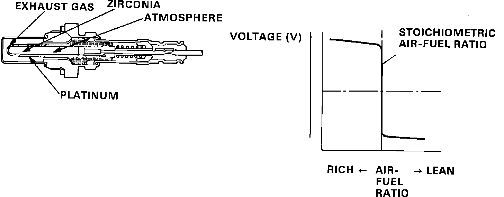

Oxygen Sensor: Description and Operation
Oxygen Sensor Construction and Operation:

The oxygen sensor (O2) is mounted to the exhaust manifold with the sensor end extending into the exhaust stream. The sensor uses zirconia and platinum to compare exhaust oxygen content with that of the outside air. When heated by the exhaust, the sensor supplies a low voltage signal (0 - 1 volt) to ECU pin C16 based upon this oxygen differential. When the engine is running rich, the oxygen differential is relatively high so signal voltage increases. When a lean condition occurs the difference in oxygen content is much lower causing a lower voltage signal to be produced. The ECU uses the O2 signal to correct fuel mixture by changing injector duration as required.